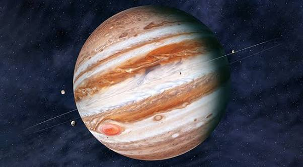
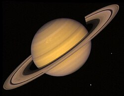
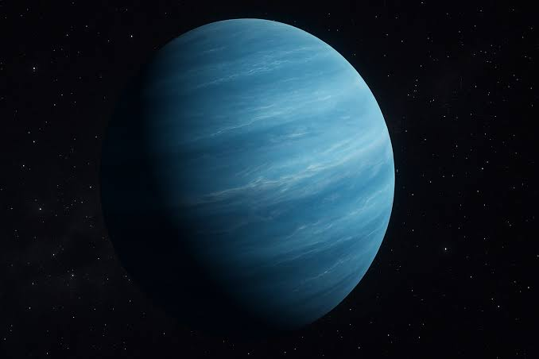
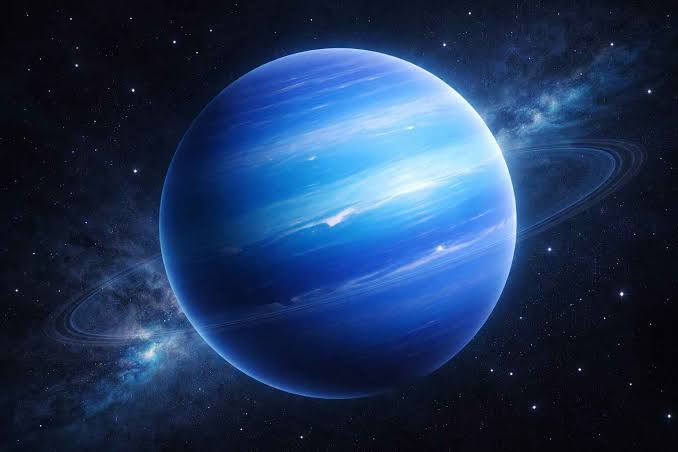

Планети-гіганти Сонячної системи
Зовнішні планети Сонячної системи складаються переважно з газів та льоду і значно перевищують Землю за розмірами.
Юпітер

Найбільша планета Сонячної системи, класичний газовий гігант, що складається переважно з водню та гелію.
Цікаві факти:
- Маса Юпітера більш ніж удвічі перевищує масу всіх інших планет Сонячної системи разом узятих.
- Велика червона пляма на Юпітері — це гігантський антициклон, який вирує вже кілька століть.
- Юпітер обертається навколо своєї осі швидше за будь-яку іншу планету: доба там триває менше 10 годин.
Сатурн

Друга за розміром планета Сонячної системи, відома своєю вражаючою системою яскравих кілець.
Цікаві факти:
- Середня густина Сатурна менша за густину води — теоретично він міг би плавати у величезному океані.
- Кільця Сатурна складаються з мільярдів частинок льоду та каміння розміром від пилинок до цілих будинків.
- На північному полюсі планети вирує стійкий атмосферний вихор правильної шестикутної форми.
Уран

Крижаний гігант блакитно-зеленого кольору, який є сьомою планетою від Сонця.
Цікаві факти:
- Вісь обертання Урана нахилена майже на 98 градусів, через що планета ніби «котиться» по орбіті на боці.
- Уран є найхолоднішою планетою Сонячної системи: температура в його атмосфері опускається до -224 °C.
- Своїм блакитним відтінком планета завдячує метану у верхніх шарах атмосфери, який поглинає червоне світло.
Нептун

Найвіддаленіша від Сонця планета Сонячної системи, темно-синій крижаний гігант із надзвичайно бурхливою атмосферою.
Цікаві факти:
- На Нептуні дмуть найсильніші вітри в Сонячній системі, швидкість яких сягає 2100 км/год.
- Нептун став першою планетою, відкритою завдяки математичним розрахункам, а не прямим спостереженням у телескоп.
- Один рік на Нептуні триває майже 165 земних років.